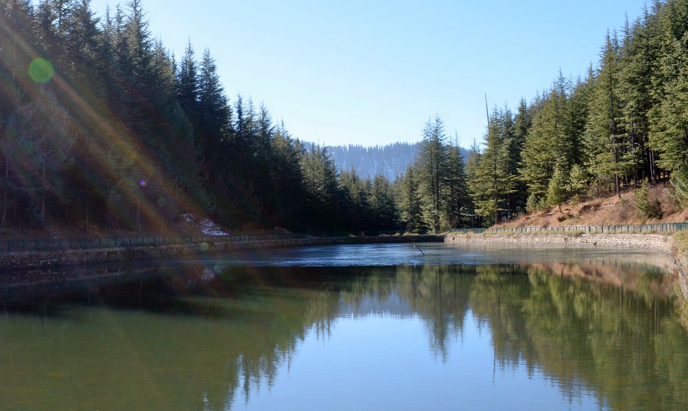

NarkandaGeneralGeographyClimateFloraDemographicsCulture
General
Narkanda is a town and a nagar panchayat in Shimla district in the Indian state of Himachal Pradesh. It is at an altitude of 2708 meters on the Hindustan-Tibet Road (NH 22) in Himachal Pradesh, India within a fir (abies pindrow) forest. It is about 65 km away from Shimla and surrounded by the Himalayan Range.
It is a skiing resort in winter. It connects Shimla with Rampur and a detour also goes to Thanedhar, the prime apple belt of Himachal Pradesh where Satyananda Stokes started the apple culture.
